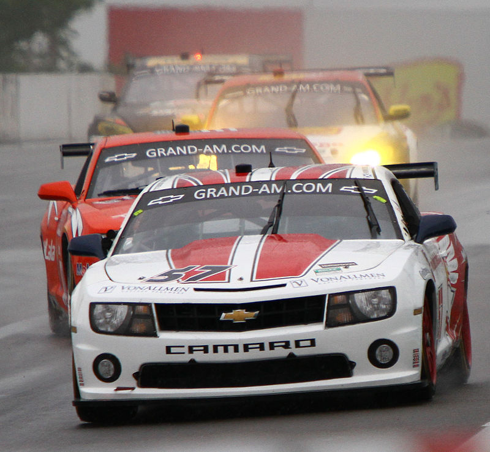

| Datos |
Generacion | Pasion sobre ruedas |
Evolucion |
Tipos Autos |
Historia |
carros clasicos |
Arte |
Carros |
Videos |
Formulario | Coches deportivos |

El Chevrolet Camaro es un automóvil deportivo de dos puertas, con motor delantero montado longitudinalmente y de tracción trasera, producido por el fabricante estadounidense Chevrolet, división de General Motors (GM) de 1966[1] a 2023. Compartía su plataforma y la mayoría de sus componentes con el Pontiac Firebird. Se clasifica como un pony car y en algunas versiones también como un muscle car. Surgió como la respuesta de GM al creador del segmento de los "pony cars": el Ford Mustang.
En plena era de los "pony cars", Chevrolet presentó este modelo en dos versiones: el Camaro Rally Sport (RS) y el Camaro Super Sport (SS). Este último contaba con un motor V8 de 350 pulgadas cúbicas (5,7 litros) y otro opcional de 396 pulgadas cúbicas (6,5 L), los cuales estaban hechos para la clase de cliente estadounidense apasionado por los Big block, con la idea de "comer en el verano e hibernar en el invierno", ya que se fabricaba tanto en versión cupé como en descapotable. Esta tradición jamás continuó a pesar de la gran decadencia a mediados de los años 1970 con la subida del precio de los combustibles, provocada por la Crisis del petróleo de 1973. Este modelo se hizo famoso en las carreras de Trans-Am Series y en la National Hot Rod Association (NHRA). Fue mostrado por primera vez en un preestreno para la prensa en Detroit (Míchigan), el 12 de septiembre de 1966 y más tarde en Los Ángeles (California). Estuvo oficialmente a la venta en los concesionarios a partir del 29 de septiembre de 1966. Fue presentado como el modelo del año en 1967,[8] compartiendo el diseño del bastidor delantero / semimonocasco con el Chevy Nova de 1968.
La mayoría de motores y componentes del modelo anterior de 1969 fueron incluidos, con excepción del seis en línea de 230 plg³ (3,8 L), entonces el modelo base pasó a ser el de 250 plg³ (4,1 L) con 155 HP (157 CV; 116 kW). Al inicio de 1970, tenía el bloque grande L78 396 nominalmente, pero en realidad era una cilindrada de 402 plg³ (6,6 L) con 375 HP (380 CV; 280 kW) a las 5600 rpm y un par máximo de 415 lb·pie (563 N·m) a las 3600 rpm, aunque Chevrolet decidió dejar los emblemas 396. Además del modelo base, había opciones como el Rally Sport y el Z-28 Special Performance Package (paquete de desempeño especial), el cual tenía un nuevo motor de alto rendimiento LT-1 de 350 plg³ (5,7 L) que venía del Corvette con 360 HP (365 CV; 268 kW) y 380 lb·pie (515 N·m), el cual se construyó usando partes y componentes mejorados, con un carburador de cuatro bocas Holley de 780 cuft/min (22,1 m³/min), que desarrollaba un mayor par motor y tenía un mejor desempeño en general que el anterior de 302 plg³ (4,9 L) usado en los Z-28 de 1967-69. Estaba disponible como opción una transmisión automática Turbo Hydramatic 400 de tres velocidades, o bien, la manual de cuatro velocidades de serie.
La tercera generación fue lanzada a la venta en diciembre de 1981, comenzando su producción el 12 de octubre de ese mismo año. Para el modelo 1982 se introdujeron los primeros Camaro con carrocería estilo Hatchback y otras opciones de fábrica como inyección de combustible y un motor de cuatro cilindros en línea. El Z28 de 1982 fue el coche del año de la revista Motor Trend. En esta generación el modelo base se ofrecía el motor de cuatro cilindros LQ9 de 151 plg³ (2,5 L). El Berlinetta venía con el V6 LC1 de 173 plg³ (2,8 L) y el Z28 con el V8 LG4 de 305 plg³ (5 L) con 145 HP (147 CV; 108 kW), acoplado a una transmisión manual de cuatro velocidades o una automática de tres velocidades. La versión opcional con el motor LU5 también de 305 plg³ (5 L) e inyección "twin TBI Cross Fire" y tomas de aire funcionales sobre el cofre, producía una potencia máxima de 165 HP (167 CV; 123 kW) y solamente estaba disponible con una transmisión automática de tres velocidades.
Participa en las competencias de la serie NASCAR con un Camaro ZL1 como plataforma, el cual ofrece la conexión más auténtica entre la pista y el salón de ventas. Erica Enders se convirtió en la primera mujer con cuatro campeonatos al conseguir el título en las NHRA Finals, donde derrotó a su rival y también piloto de Camaro Kyle Koretsky en la final para llevarse su cuarto título Camping World Pro Stock desde 2014. Esta fue su quinta victoria en The Strip y su cuarta victoria de la serie en esa temporada. Con la cantidad increíble de 16 campeonatos de la NHRA y 151 carreras ganadas, John Force[91] domina las carreras de dragsters desde hace décadas. El veterano de carreras también se asoció con Chevy para diseñar el COPO Camaro 2020, el cual viene en más opciones de colores que nunca, que incluyen dos opciones inspiradas en John Force, cuatro colores base y siete combinaciones de colores históricas en homenaje al COPO Camaro 1969 original. El legado del COPO comenzó en 1969, cuando se fabricó el primer auto Camaro de carreras de dragsters especialmente diseñado para competir en la NHR Stock Eliminator. Desde entonces, el COPO Camaro ha batido récords nacionales de tiempo por 1/4 de milla (402 m) y se ha convertido en uno de los autos más emblemáticos que alguna vez haya ingresado a la pista de las carreras de pista recta.[91] Uno de los Camaro más reconocidos a lo largo de su historia es el conducido por Mark Donohue en las Trans Am Series a finales de los años 60, el Camaro Z/28 Sunoco 1968 del equipo Penske Racing. Su característica combinación de colores en azul y amarillo es una seña de identidad. 40 años después de sus éxitos en las Trans Am Series, Chevrolet y Riley Technologies vuelven a llevar un Camaro con esta combinación de colores a la competición, la Grand Am Koni Challenge. El Camaro GS Racecar Concept era algo más que un prototipo de exhibición: un anticipo de cómo sería en 2009 que intentaba llevarse las diferentes carreras de las Grand Am Series.[92] En Argentina, la histórica categoría de automovilismo Turismo Carretera, tendría en 2024 una renovación de parque de vehículos más importante de las últimas décadas, al aceptar que compitan autos con la silueta del Camaro.